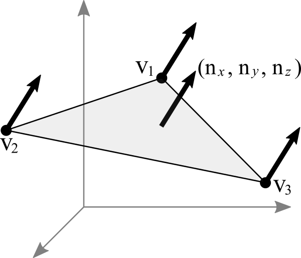
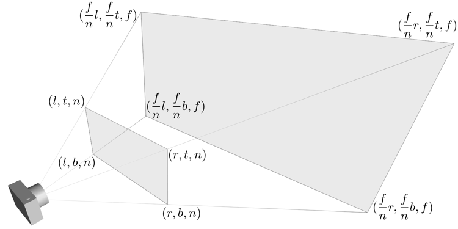
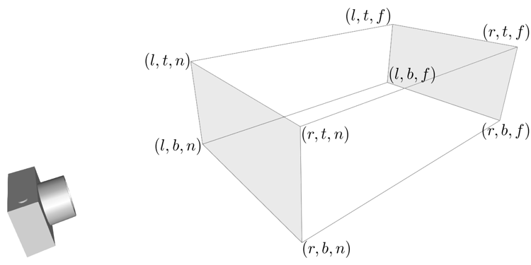
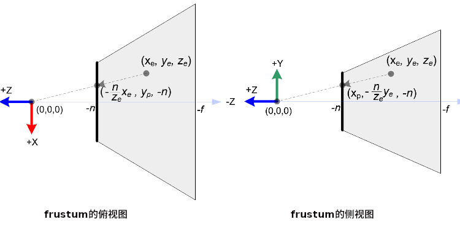

图形学-OpenGL坐标变换
之前只讲了几何变换,也就是最简单的变换, OpenGL 里面还有很多其它变换,本文主要讲述 OpenGL 的各种坐标系以及它们之间的转换,这对于理解 OpenGL 的渲染管线/渲染流水线(rendering pipeline, 我也不知道为什么会这么翻译)很有必要.
不过我不打算花重笔写渲染管线的内容,因为渲染管线会随着 OpenGL 的升级而改变, OpenGL 1.X 到 OpenGL 2.X 就经历一次重大改变: 固定管线被移除(fixed function pipepline),取而代之的是可编程管线(programmable pipeline),
OpenGL Shader Language (GLSL) 也是从这个版本出来的,其实也就是固定管线的一部分环节"放开权限"给开发人员编码,所以从 OpenGL 1.X 开始学习也是没问题的,
关于更多的本版变迁问题,可以在官方维基的这个页面看到,本文是按照 1.X 渲染管线来写的, OpengL 1.X 渲染管线的文章有很多,比如这里这一篇,还是同一位作者,本文是参考了他的这篇文章: OpenGL Transformation 写的.
本文只会写渲染管线的两个环节: Vertex Operation 以及 Primitive Assembly,它们背后的数学原理,这是后面学习 GLSL 是必须的知识基础.
几个该清楚的概念
齐次空间
欧几里得空间+笛卡尔坐标系这样的组合中,两条平行的直线是永远不可能相交的,这是不符合人的视觉的,但在人看来,也就是在投影空间(projective space)却会相交.

Figure 1: 马路两边的两条平行线在原处相交(图片来源于网络)
为了解决计算问题,数学家给投影空间找到一种坐标系:齐次坐标系(Homogeneous coordinate system).所以投影空间又叫齐次空间(Homogeneous space).
齐次空间是用来处理投影空间上的图形以及几何的计算.齐次坐标就是 \(n\) 维坐标的 \(n+1\) 维坐标表示,是投影空间也基于向量空间.
一个 2D 的笛卡尔坐标 \(\left(x, y\right)\) 的齐次坐标是这样的 \(\left(x_{'}, y_{'}, w\right)\),其中满足这样的关系 \(\begin{equation} \left\{ \begin{aligned} x &= \frac{x_{'}}{w} \\ y &= \frac{y_{'}}{w} \end{aligned} \right. \end{equation}\).
一个笛卡尔坐标 \(\left(1, 2\right)\) 在齐次坐标系上可以用 \(\left(1, 2, 1\right)\), \(\left(2, 4, 2\right)\) … 表示,不管用哪种方式表示,它们都对应同一个笛卡尔坐标,所以这些点都是"homogeneous",所以它们都叫做"homogeneous coordinates".
当 \(\left(1, 2\right)\) 向原处无限移动,相当于 \(w = 0\), \(\left(\frac{1}{0}, \frac{2}{0}\right) \approx \left(\infty, \infty\right)\).
这里结合仿射空间来理解,你可能会发现这不就是仿射变换吗?答案也的确如此,一个三维的点可以看成一个二维的点平移到平面外所得到的结果.所以说, 仿射空间由向量空间派生得来,而投影空间由仿射空间派生得来.
如何证明两条平行线可以相交呢?
假设现在在笛卡尔坐标系中有这这样的方程组: \(\begin{equation} \left\{ \begin{aligned} Ax + By + C = 0 \\ Ax + By + D = 0 \end{aligned} \right. \end{equation}\),如果 \(C \neq D\), 那么该方程组无解(因为平行无法相交),如果 \(C = D\),那么两条线是重叠的,或者说就是同一条线.
把它改写成投影空间上的关系: \(\begin{equation} \left\{ \begin{aligned} A\frac{x^{'}}{w} + B\frac{y^{'}}{w} + C = 0 \\ A\frac{x^{'}}{w} + B\frac{y^{'}}{w} + D = 0 \end{aligned} \right. \end{equation}\) \(\longrightarrow\) \(\begin{equation} \left\{ \begin{aligned} Ax^{'} + By^{'} + Cw = 0 \\ Ax^{'} + By^{'} + Dw = 0 \end{aligned} \right. \end{equation}\).
现在这个方程组有一个解: \(\left(x^{'}, y^{'}, 0\right)\),因为 \(\left(C - D\right)w = 0\),所以 \(w = 0\),所以它们会在 \(\left(x^{'}, y^{'}, 0\right)\) 上相交.
对于 3D 也是适用的,都是增加额外一个维度,不过这个额外的维度意义重大,它引入了透视这个概念,为 3D 坐标映射到 2D 坐标提供了可能(总得来说提供了高维度到低一维度转变的可能).
更多关于齐次空间的内容可以参考这些资源:
http://morpheo.inrialpes.fr/people/Boyer/Teaching/M2R/geoProj.pdf
有涉及到欧几里得空间,仿射空间还有投影空间三者的关系,还有不同变换的效果的直观展示.
http://kahrstrom.com/mathematics/documents/OnProjectivePlanes.pdf
直接给出了相关概念的定义,可以作为参考.
平面方程
这里先强调一下: 从原点出发到 \(p\) 的向量会采用 \(\vec{p}\) 这种方式表示, \(p\) 就单纯表示点,如果是从 \(p_{1}\) 出发到 \(p_{2}\) 的向量就用 \(\vec{p_{1}p_{2}} = p_{2} - p_{1}\) 表示.
在欧几里得空间中,指定任意平面 \(P\) 的某个点 \(p_{1}\), 从该点的位置延伸一条法线向量 \(\vec{n} = \left(a, b, c\right)\),(可以从任意点延伸出相同方向的法线变量),
该法线向量表示了平面 \(P\) 的面向方向,而 \(p_{1}\) 确定了平面的位置,可以反过来说 \(p_{1}\) 和 \(\vec{n}\) 确定了 \(P\),
可以想像成一根棒子 \(\vec{n}\) 从木板 \(P\) 的 \(p_{1}\) 点位置垂直穿过,如图所示,

因为平面 \(P\) 不包含原点,所以可以把它看做一个仿射空间,在该空间上, \(p_{1}\) 和 \(p\) 分别是已知的点和 任意的点,而不是从原点出发的向量, 并且 \(p_{1}\) 和 \(p\) 构成直线(向量):
\(\vec{p} - \vec{p_{1}} = \left(x - x_{1}, y - y_{1}, z - z_{1}\right)\).
因为 \(\vec{n}\) 垂直平面 \(P\),所以也垂直与 \(P\) 上的任意直线(向量),所以关系成立 \(\vec{n} \cdot \left(\vec{p} - \vec{p_{1}}\right) = 0\),这个就是平面方程 (plane equation),可以用来表示平面 \(P\).根据这条等式可以得到:
\(\left(a, b, c\right) \cdot \left(x - x_{1}, y - y_{1}, z - z_{1}\right) = 0\)
\(a\left(x - x_{1}\right) + b\left(y - y_{1}\right) + c\left(z - z_{1}\right) = 0\)
\(ax + by + cz - \left(ax_{1} + by_{1} + cz_{1}\right) = 0\).
反过来说, 如果点 \(v\) 满足 \(P \cdot v = 0\),那么 \(v\) 就属于平面 \(P\) 上.
因为 \(\vec{p_{1}}\) 和 \(\vec{n}\) 是共线且同向的,所以它们关系满足 \(\vec{p_{1}} = k \cdot \vec{n} = \left(ka, kb, kc\right)\), \(k\) 是一个常量,也就是说 \(ax + by + cz - k \cdot \left(a^{2} + b^{2} + c^{2}\right) = 0\).
如果 \(\vec{n}\) 是单位向量,因为 \(a^{2} + b^{2} + c^{2} = 1\),所以整个等式变为 \(ax + by + cz - k = 0\),这种情况下 \(k\) 就是平面 \(P\) 到原点的距离 \(d\) 了, 而 \(d = - \left(ax_{1} + by_{1} + cz_{1}\right)\),那么等式变成 \(ax + by + cz + d = 0\).
根据上面说过的可以根据方向以及平面到原点的距离确定平面,也就是平面 \(P\) 可以由 \(\vec{n}\) 和 \(d\) 决定,这可以通过齐次空间的角度来看待平面 \(P\), 平面 \(P\) 由经过原点的平面 \(P^{'}\) 沿着它面向的方向平移距离 \(d\) 得到, \(P = \left(\begin{array}{c|c}\vec{n} | d\end{array}\right) = \left(a, b, c, d\right)\).
假设点 \(p = \left(x, y, z, w\right)\) 满足 \(P \cdot p = ax + by + cz + dw = 0\),那么点 \(p\) 就在平面 \(P\) 上.这里 \(d = \frac{-\left(ax_{1} + by_{1} + cz_{1}\right)}{w}\),如果 \(w = 1\),那整个等式就和欧几里得空间下的平面方程一样.
OpenGL 中对象的变换历程

Figure 3: OpenGL vertex transformation
理解其中的每个环节对以后掌握编写 Shader 是十分有必要的:其中发生了什么,要怎么计算.
比如在学习 GLSL 的编写时,通常会有说某个坐标是什么坐标系,意思就是这个坐标系是通过了什么变换后得到的结果,
比如坐标用的世界坐标系,那么它就是顶点经过模型变换得到的结果;
再比如坐标用的是视点坐标系,那么它就是顶点先经过模型变换然后再经过视点变换得到的结果,等等.
如果这些都不理解的话,很容易会因为用错坐标系得到错误的计算结果,比如在以后的光照计算中.
对象坐标系
用来画对象(object),或者说指定顶点(vertex)的坐标系叫做对象坐标系(object coordinate system).
世界坐标系
在 OpenGL 中,复杂的对象是由简单的对象构成的,最简单的对象叫做图元(primitive),一旦画出对象接下来就由两种可能,
A. 把不同对象组装成更加复杂的对象.
B. 把对象放到场景(scene)/世界(world)中.
其实场景/世界就是所有对象里面最复杂,最大的那个对象,定义场景/世界的坐标系叫做世界坐标系(world coordinate system),本质就是一个对象坐标系.
我们把这个坐标系统上的所有的点的集合叫做世界空间(world space).
从对象坐标系到世界坐标系的变换
上面中, \(A\) 过程中对象是经历了从一个对象坐标系到另外一个对象坐标系的变换, \(B\) 过程是对象经历了从对象坐标系到世界坐标系的变换,
本质都是从 一个对象坐标系到另外一个对象坐标系的变换,这种变换叫做模型变换(modeling transformation),因此在 OpenGL 中对象坐标系以及世界坐标系只是概念上的区别,没有这两种概念的对应实现.
用 \(M_{model} = \left(\begin{array}{c} m_{1x} & m_{2x} & m_{3x} & d_{x} \\ m_{1y} & m_{2y} & m_{3y} & d_{y} \\ m_{1z} & m_{2z} & m_{3z} & d_{z} \\ 0 & 0 & 0 & 1\end{array}\right)\) 表示这个模型变换.
其中 \(\left(\begin{array}{c}m_{1x} \\ m_{1y} \\ m_{1z}\end{array}\right)\), \(\left(\begin{array}{c}m_{2x} \\ m_{2y} \\ m_{2z}\end{array}\right)\) 以及 \(\left(\begin{array}{c}m_{3x} \\ m_{3y} \\ m_{3z}\end{array}\right)\) 分别是 \(x\), \(y\) 以及 \(z\) 轴, 至于 \(\left(\begin{array}{c}d_{x} \\ d_{y} \\ d_{z} \end{array}\right)\) 是负责平移.
通过一个 2D 例子想象一下 ,我们已经画了一个三角形,要把它放到已经画好的正方形上,它们都有各自的坐标系,也就是上面提到的对象坐标系, 通常来说都希望系统对象都是居中到坐标系的中心,也就是原点上,或者至少使用原点作为参考点(reference point), 首先把三角形放到正方形的原点上,然后 *通常* 按照缩放,旋转以及平移这个顺序参考正方形的坐标系原点进行几何变换, 按照这个顺序变换是因为缩放和旋转不会让三角形偏移参考点,而平移是会偏移参考点的,如果先平移再缩放和旋转的话,直接按照参考点进行缩放和旋转会出现问题. 不过要记住, OpenGL 里面会按照相反的指令顺序执行变换的,所以如果是想按照 *缩放,旋转和平移* 这个顺序进行变换,那么代码里面就要按照 *平移,旋转和缩放* 这个顺序写.
视点坐标系
在现实中,一个人看到的东西是由他的位置以及看的方向所决定的,在 OpenGL 中也有类似的存在,叫做 viewer,它有自己的坐标系用来描述它的位置以及看的方向,这个坐标系叫做视点坐标系(eye coordinate system).
在该坐标系中, Viewer 位于原点 \(\left(0, 0, 0\right)\) 上看着 \(z\) 轴的负方向(就是向这屏幕里), \(y\) 轴的正方向是向上, \(x\) 轴的正方向是向右,也就是说 Viewer 使用的是左手坐标系,这是一个以 viewer 为中心的坐标系统 (viewer-centric coordinate system),
这个坐标系是 固定 的,用来在屏幕绘画(drawing)的,这个 viewer 其实就是 OpenGL 的相机(camera),但实际上 OpenGL 但没有定义相机这个对象以及对应的变换,所以如果要看场景的其他位置,只能对整个场景进行反向模型变换(比如看场景的右边,那么场景就需要向左边平移)来实现.
也就是说 OpenGL 的相机是虚拟的.
从世界坐标系到视点坐标系的变换
一旦模型变换完成后,就可以开始进行到视点坐标系的变换了,这个叫做视点变换(viewing transformation).
OpenGL 有一个叫做 \(lookAt\) 的变换,就是用来对相机进行变换的.之前也说了, OpenGL 的相机是虚拟的,它是根据参考的相对性对场景进行逆向变换来达到"变换相机"的效果.
举个例子,有两个人 \(A\) 和 \(B\) 对视,现在 \(A\) 因为有些原因不动,要靠近 \(B\) 就只能让 \(B\) 向 \(A\) 靠近; 靠近后 \(A\) 想看 \(B\) 的衣服的左边袖子,那么只能让 \(B\) 往自己的右边转.
回到 OpenGL 的 \(lookAt\) 中,相机就是 \(A\), 场景就是 \(B\),回到 \(lookAt\) 中,
\(lookAt\) 就是相机从位于原点上看着 \(z\) 的负反向到位于 \(\left(x_{e}, y_{e}, z_{e}\right)\) 上看着 \(\left(x_{t}, y_{t}, z_{t}\right)\) 的变换,这些坐标都是定义在世界坐标系上.
\(lookAt\) 变换由两个变换构成: 逆向地从视点坐标到原点平移整个场景,用 \(M_{T}\) 表示;逆向的旋转整个场景,用 \(M_{R}\) 表示.
\(M_{view} = M_{R}M_{T} = \left(\begin{array}{c} r_{1} & r_{4} & r_{7} & 0 \\ r_{2} & r_{5} & r_{8} & 0 \\ r_{3} & r_{6} & r_{9} & 0 \\ 0 & 0 & 0 & 1 \end{array}\right)\left(\begin{array}{c} 0 & 0 & 0 & d_{x} \\ 0 & 0 & 0 & d_{y} \\ 0 & 0 & 0 & d_{z} \\ 0 & 0 & 0 & 1 \end{array}\right)\).
首先是平移,因为是场景的反向平移,所以 \(M_{T} = \left(\begin{array}{c} 1 & 0 & 0 & -x_{e} \\ 0 & 1 & 0 & -y_{e} \\ 0 & 0 & 1 & -z_{e} \\ 0 & 0 & 0 & 1\end{array}\right)\).
然后是旋转,同样也是反向旋转的,比如相机看一个对象的上方时候,相当于场景围绕自身原点往下旋转.

Figure 4: 相机看小黄鸭的顶部
这个图的意思是相机还是相对小黄鸭原来的位置(也就是浅色橙线)看着原来的方向,小黄鸭往下旋转相当于相机围绕小黄鸭反方向旋转(单独把相机从旋转后的位置摆放回原来的位置上就看出来了).

Figure 5: 相机看小黄鸭的正前方
这图同理,如上.
那么这个旋转的矩阵应该怎么求出来呢?还是按照上面的图来看,其实就是求出小黄鸭旋转的逆矩阵.
这么理解,先把相机看做场景种的一个对象,整个场景旋转,这个时候相机看到的内容还是一样的;然后单独把相机还原到场景旋转前的位置上,这个还原的变换也就是世界坐标旋转的逆矩阵了.
假设相机的变换矩阵是 \(M_{r} = \left(\begin{array}{c} l_{x} & u_{x} & f_{x} & 0 \\ l_{y} & u_{y} & f_{y} & 0 \\ l_{z} & u_{z} & f_{z} & 0 \\ 0 & 0 & 0 & 1 \end{array}\right)\), 那么 \(M_{R} = M_{r}^{-1} = M_{r}^{T} = \left(\begin{array}{c} l_{x} & l_{y} & l_{z} & 0 \\ u_{x} & u_{y} & u_{z} & 0 \\ f_{x} & f_{y} & f_{z} & 0 \\ 0 & 0 & 0 & 1\end{array}\right)\) (由于 \(M_{r}\) 是一个正交坐标系,而正交坐标系的逆矩阵就是它的转置矩阵).
相机现在是位于 \(\left(x_{e}, y_{e}, z_{e}\right)\) 看着 \(\left(x_{t}, y_{t}, z_{t}\right)\) 的,以相机作为原点建立一个正交坐标系,只要求出该坐标系的三个基底变量就可以解得该矩阵.
我们很容易得到 \(\left(f_{x}, f_{y}, f_{z}\right)\),也就是从看的目标的位置到相机的位置: \(forward = \left(x_{t}, y_{t}, z_{t}\right) - \left(x_{e}, y_{e}, z_{e}\right)\),然后求出 \(forward\) 的单位向量 \(f\);
然后把给出的(如果没给出就用 \(\left(0, 1, 0\right)\))向上方向的向量 \(up\) 与 \(f\) 进行叉积乘法(注意: \(up\) 和 \(f\) 不一定是垂直的,但两者必定会在同一个平面上),求出同时垂直于它们的向量 \(left\),并且求出单位向量 \(f\);
最后对 \(f\) 和 \(l\) 进行叉积乘法求出同时垂直于它们的向量 \(u\),这样三个基底变量就解出了.
到了这一步,整个 Vertex Operation 环节就完成了.
在 OpenGL 里面,模型变换和视点变换是集成为一个阶段
法线向量变换
别忘记还有光线的存在,如果开发人员启用了光照(lighting)那么就得计算光线,但是模拟现实光线的运算量是十分大的,目前的硬件条件下只能对现实光线进行简化或者另外一种取代方案,这个方案用到法线向量.
光线计算并非完全就是法线向量变换,具体内容计算以后再讨论,目前先了解 OpenGL 中的法线向量,法线向量只能添加到顶点上,这和在数学中学到的不一样: 在三维空间中,点没有方向,没有线和点垂直的说法,只垂直于表面.
这是因为在现实世界中表面不可能是平的,放大看会非常粗糙,这样的凹凸不平的表面上可以找到无数个不同方向的法线,非常乱并且运算量十分庞大,
而在计算机中所有面可以说是平的,哪怕曲面都是由多个小平面堆砌而成的近似结果,越是放大曲面就越能看到它的小平面,这对应现实中一个例子:地球,行走在地面上感觉地面是平的,但是通过卫星却看到地球是圆的,
计算机中的曲线也一样的,用图形处理软件放大像素图中的圆形可以看到它的边是由多条短小直线构成的.法线都是垂直于这些小平面的,由于小平面是由顶点构成的,所以法线向量就很合理地成为顶点的属性.
法线向量有两种,比如 graphicsbook 这里的例子:由多个平面构成几何体.

这两个实际上是同一个几何体(由多个长方形平面构成),但是由于法线向量的不同导致看起来不一样,前者更光滑(smooth),后者更扁平(flat).
它们的法线分别是这样的,

可以看出一个顶点可以拥有不止一个法线向量,两种不同的法线向量分配方法反映了对一个几何体的不同看法:
前者是把几何体看做一个整体表面,而不是一个一个长方形,近似地为每个顶点添加法线向量(Normal Per Vertex);后者是把几何体看做一个一个长方形,为每个平面添加法线(Normal Per Face).
这两种分配法分别叫做 Smooth shading 和 Flat shading,如果是为了突出整体表面,那么就用 Smooth shading,如果是为了突出几何体不同的面就用 Flat shading.
现在开始了解法线向量的变换,这里用单个平面作为例子开始着手.
OpenGL 会先找出顶点 \(v_{1}\) 附近的其它顶点(\(v_{2}\) 和 \(v_{3}\)),这些顶点能够构成平面,三个顶点就能确定一个平面了,根据这些点构成的平面就能计算出平面的法线向量 \(\vec{n}\) (就是用三个点构造出两个向量,然后通过这两个向量的叉积求出法线向量),
它就是顶点(\(v_{1}\), \(v_{2}\) 和 \(v_{3}\))的法线向量了,为了到光照计算得到正确结果, OpenGL 要求法线向量规范化,也就是变成单位向量.
要注意,\(\vec{n}\) 是同时垂直于三个顶点才能说垂直于其中某一个顶点,同时垂直于三个顶点意味垂直三个顶点所处的平面上(所以这并非说 \(\vec{n}\) 垂直于 \(\vec{v_{1}}\) 这条由原点和顶点 \(\vec{v_{1}}\) 定义的直线, \(v_{2}\), \(v_{3}\) 同理).

那么问题来了,如果三个顶点发生经过 \(M_{modelview}\) 变换后,\(\vec{n}\) 会发生什么变化呢?
可以肯定的是 \(\vec{n}\) 和 \(v_{1}\), \(v_{2}\) 以及 \(v_{3}\) 的经历的变换肯定是不一样的,找个反例就知道了: \(\left(1, 0, 0\right)\) 和 \(\left(0, 1, 0\right)\) 的法线向量 \(\left(0, 0, 1\right)\),
沿 \(y\) 轴正方向平移2个单位得到 \(\left(1, 2, 0\right)\) 以及 \(\left(0, 3, 0\right)\),法线向量变成 \(\left(0, 0, 3\right)\),而不是变成 \(\left(0, 2, 1\right)\),按照单位向量标准来看法线变量还没变.
我们先换到齐次坐标系下看待这问题,根据法线向量 \(\vec{n}\) 构建出齐次平面 \(P = \left(\begin{array}{c|c} n & n_{w}\end{array}\right) = \left(n_{x}, n_{y}, n_{z}, n_{w}\right)\),该平面可看作由经过原点的平面 \(P^{'}\) 朝它面向的方向 \(\vec{n}\) 移动 \(n_{w}\) 距离后得到的.
\(v = \left(x, y, z, w\right)\) 是该平面上的任意一点,所以 \(P \cdot v = \left(\begin{array}{c} n_{x} & n_{y} & n_{z} & n_{w}\end{array}\right) \left(\begin{array}{c}x \\ y \\ z \\ w\end{array}\right) = 0\).
把这个平面方程改一下就可以推导出法线变换了: \(PM_{modelview}^{-1}M_{modelview}v = \left(\begin{array}{c} n_{x} & n_{y} & n_{z} & n_{w}\end{array}\right) M_{modelview}^{-1}M_{modelview} \left(\begin{array}{c}x \\ y \\ z \\ w\end{array}\right) = 0\).
其中 \(M_{modelview} \left(\begin{array}{c}x \\ y \\ z \\ w\end{array}\right)\) 就是我们前面提到从对象坐标变换到视点坐标的过程,那么 \(\left(\begin{array}{c} n_{x} & n_{y} & n_{z} & n_{w}\end{array}\right) M_{modelview}^{-1}\) 就是我们想要法线向量变换,这种写法可能会更加熟悉一点: \(\left(M_{modelview}^{-1}\right)^{T} \left(\begin{array}{c}n_{x} \\ n_{y} \\ n_{z} \\ n_{w}\end{array}\right)\).
整个方程是这样的意思: 从对象坐标到视点坐标变换得到的顶点 \(M_{modelview} \left(\begin{array}{c}x \\ y \\ z \\ w\end{array}\right)\) 是变换后的平面 \(\left(\begin{array}{c} n_{x} & n_{y} & n_{z} & n_{w}\end{array}\right) M_{modelview}^{-1}\) 上的一个点.
所以说白了,法线变换就是平面变换,下面这些是关于法线向量变换的额外的资料,有兴趣的可以看一下:
https://www.cs.upc.edu/~robert/teaching/idi/normalsOpenGL.pdf
3D转化成2D图像
当求出对象的视点坐标后,就需要把 3D 场景转化为 2D 图像了,因为计算机显示器就是一个 2D 平面,这需要把 3D 投影到计算机屏幕上称成为一张 2D 图片.
这一个过程经历3个步骤,
第一步 选择相机看到的内容,因为相机是不能看到完整场景的(不可能看到无限远),所以要先求出相机看到空间范围,因此需要求出哪些顶点是在视野范围内的,
之前几个阶段用到的顶点的坐标都是 \(\left(x, y, z, w\right)\), \(w=1\) 的这种形式,确定顶点是否在视野内的是由根据 \(w\) 的值来决定的,
所以现在不能单纯地把 \(w\) 设定为 1,这需要经过计算,最后得到的坐标叫做裁剪坐标(clip coordinates): \(\left(x_{clip}, y_{clip}, z_{clip}, w_{clip}\right)\).
这个过程叫做视截体剔除(frustum culling)/裁剪(clipping),最后会看到的空间形状形成一个几何体(下面会有图片),
这个步骤除了裁剪外,还会计算顶点投影后的坐标,所以这个过程也叫做投影变换(projection transformation).
第二步,把看到的空间范围映射到一个"容器"中,这个"容器"使用了一个坐标系叫做标准化设备坐标(normalized device coordinates),简称 NDC.
任何超出这个"容器"的顶点都不会被渲染,这一步就是把上面计算得到的空间范围缩放到这个"容器"里面.
这个"容器"是一个立方体,使用的是左手坐标系,三轴的范围分别都是 \(\left[-1, 1\right]\).(下面会有图),除此以外还需要把从上一步得到的齐次坐标转化成 3D 坐标,
这所有的工作其实只需要一步即可, \(\left(x_{clip}, y_{clip}, z_{clip}, w_{clip}\right)\) 变成正常 3D 坐标 NDC: \(\left(x_{ndc}, y_{ndc}, z_{ndc}\right) = \left(\frac{x_{clip}}{w_{clip}}, \frac{y_{clip}}{w_{clip}}, \frac{z_{clip}}{w_{clip}}\right)\).
所以,不满足这个条件 \(-w_{clip} \leq x_{clip}, y_{clip}, z_{clip} \leq w_{clip}\) 的顶点都会被丢弃,因为 \(-1 \leq x_{ndc}, y_{ndc}, z_{ndc} \leq 1\).
这个过程叫做 NDC 变换(NDC transformation).相信你已经发现 NDC 的每个分量其实就是一个比例,什么之间比例呢?这就涉及到 NDC 的作用了,它是用来适配视口(viewport)的,
比如 NDC 的 \(x_{n}\) 分量就是裁剪坐标 \(x_{clip}\) 与视口宽度的 一半 的比例,通过这个比例以及视口的尺寸就可以计算出点在视口中的实际位置.
第三步,就是把裁剪空间里面的内容适配到视口上,这一步叫视口变换(viewport transformation), NDC 是一个比例集合,通过这个比例集合可以计算出一个顶点输出到视口上的位置,
通俗点说就是计算出这个顶点要显示在哪个像素上,如何描述像素的位置呢?这就需要一个概念叫做窗口坐标(window coordinate)/屏幕坐标(screen coordinates)了,
我们把这个坐标系统上的所有点的集合叫做图像空间(Image Space).
屏幕坐标系就是以屏幕左上角为原点,向右为 \(+x\), 向下为 \(+y\),一个像素为一个单位的坐标系,假设视口是一个左上角位于屏幕的 \(\left(x, y\right)\) 并且宽和高分别为 \(w\) 和 \(h\) 的矩形,
那么 NDC 显示在屏幕的位置,也就是对应的屏幕坐标就是 \(\left(\begin{array}{c}x_{w} \\ y_{w} \\ z_{w}\end{array}\right) = \left(\begin{array}{c} \frac{w}{2} \cdot x_{ndc} + (x + \frac{w}{2}) \\ \frac{h}{2} \cdot y_{ndc} + (x + \frac{h}{2}) \\ \frac{f-n}{2} \cdot z_{ndc} + \frac{f+n}{2} \end{array}\right)\).
\(z_{w}\) 值决定了一个顶点会不会被渲染出来,比如拍照的时候被挡住的东西不会被拍到,这里以后会详细简述的.
一旦计算完后,就要把内容渲染到视口上了(也就是转化成像素),这过程叫做光栅化(raterization),这个过程不是本文的重点,以后会说.
视口变换这一步很简单,该讲的都讲完了,重点是前面两步.
到了这一步,其实整个 Primitive Assembly 环节就完成了.
从视点坐标到裁剪坐标的变换,再到标准化设备坐标.
先看一下如何选择相机看到的内容,有两种选择方案,如下,

Figure 9: 透视投影(投影相机看到的内容)

Figure 10: 正交投影(正交相机看到的内容)
图中的两个多边体分别就是眼睛能够看到的空间,选择相机的内容就是构建出这两个多边体,这两个多边体叫做视体(view volume),第一个是截了头的锥体(frustum),第二个是长方体.
构造这两个多边体都只需要 6 个参数,分别是 \(l(eft)\), \(r(ight)\), \(b(ottom)\), \(t(op)\), \(n(ear)\) 以及 \(f(ar)\),为了区分方向,我们采用正负号来表示,并让这 6 个参数要满足这样的关系 \(\begin{equation} \left\{ \begin{aligned} l < r \\ b < t \\ n &< f\end{aligned} \right. \end{equation}\).
可以看到每个多边体都有两个比较深色的平面,离相机近叫做近裁剪平面(near plane / near clipping plane),远的叫做远裁剪平面(far plane / far clipping plane).
(你可能会问为什么看到的内容不是从相机位置到远处,而是要截头呢?截掉尾部很好理解,那是因为人不可能看到无限远,而从相机位置,也就是 \(z = 0\) 会影响齐次坐标到 NDC 的计算,看过整个推导后可以回过来重新思考一下.)
这两种选择方案分别叫做: 透视投影(perspective projection)以及正交投影(orthographic projection). 在 OpenGL 中,视点空间上的点会被投影到近裁剪平面上,所以近裁剪平面也叫投影平面(projection plane).
- 透视投影
这种投影符合人的视觉: 两条平行线会随着距离边远而慢慢靠近,最后在无限的远处进行相交(可以参考上面齐次方程里面的那张图).
这有一个信息:一个点坐标的 \(z\) 分量与它的 \(x\) 和 \(y\) 分别存在某种联系.在后面的推导中可以证明这个信息是对的.
现在找出透视投影的矩阵,首先目前已经知道的信息有:
- 计算出坐标的 \(w\) 用于之后的裁剪,再把坐标变换成标准化设备坐标系,
- 顶点会被投影到近裁剪平面上

Figure 11: 透视投影2
这里第一个就是透视的截头锥体,第二个是标准化设备坐标系.
假设投影矩阵 \(M_{projection} = \left(\begin{array}{c} x_{l} & x_{u} & x_{f} & x \\ y_{l} & y_{u} & y_{f} & y \\ z_{l} & z_{u} & z_{f} & z \\ w_{l} & w_{u} & w_{f} & w \end{array}\right)\),那么变换过程就是: \(\left(\begin{array}{c} x_{clip} \\ y_{clip} \\ z_{clip} \\ w_{clip} \end{array}\right) = M_{projection}\left(\begin{array}{c}x_{eye} \\ y_{eye} \\ z_{eye} \\ w_{eye}\end{array}\right)\), 把裁剪后剩下的顶点变换成
NDC, \(\left(\begin{array}{c}x_{ndc} \\ y_{ndc} \\ z_{ndc}\end{array}\right) = \left(\begin{array}{c}\frac{x_{clip}}{w_{clip}} \\ \frac{y_{clip}}{w_{clip}} \\ \frac{z_{clip}}{w_{clip}} \end{array}\right)\).下图展示了一个视点空间上的点 \(v_{e} = \left(x_{e}, y_{e}, z_{e}\right)\) 如何投影到近裁剪平面的点 \(v_{clip} = \left(x_{p}, y_{p}, z_{p}\right)\) 上.

从俯视图可以看到 \(x_{e}\) 投影到 \(x_{p}\) 上,可以看到原点加上 \(v_{e}\) 配合 \(z\) 轴可以组成一个三角形,而原点加上 \(v_{p}\) 配合 \(z\) 轴同样可组成一个三角形,并且两个三角形是相似三角形.
根据这个关系可以得到 \(\frac{x_{p}}{x_{e}} = \frac{-n}{z_{e}}\),所以 \(x_{p} = \frac{-nx_{e}}{z_{e}} = \frac{nx_{e}}{-z_{e}}\).
从侧视图也可以看出两个相似三角形, \(y_{e}\) 投影到 \(y_{p}\) 上,根据关系可以的 \(\frac{y_{p}}{y_{e}} = \frac{-n}{z_{e}}\),所以 \(y_{p} = \frac{-ny_{e}}{z_{e}} = \frac{ny_{e}}{-z_{e}}\).
注意, \(x_{p}\) 和 \(y_{p}\) 都取决于 \(z_{e}\),且成反比关系,考虑到后面还有
NDC转换: \(\left(\begin{array}{c}x_{ndc} \\ y_{ndc} \\ z_{ndc}\end{array}\right) = \left(\begin{array}{c}\frac{x_{clip}}{w_{clip}} \\ \frac{y_{clip}}{w_{clip}} \\ \frac{z_{clip}}{w_{clip}} \end{array}\right)\),索性把 \(w_{clip}\) 取为 \(-z_{eye}\) (取负号是因为NDC用的左手坐标系),所以 \(w_{p}\) 坐标设定成 \(-z_{e}\),透视投影过程变成 \(\left(\begin{array}{c} x_{p} \\ y_{p} \\ z_{p} \\ w_{p} \end{array}\right) = \left(\begin{array}{c} x_{l} & x_{u} & x_{f} & x \\ y_{l} & y_{u} & y_{f} & y \\ z_{l} & z_{u} & z_{f} & z \\ 0 & 0 & -1 & 0 \end{array}\right) \left(\begin{array}{c}x_{e} \\ y_{e} \\ z_{e} \\ w_{e}\end{array}\right)\),这样透视投影矩阵的第4行就确定了.
既然如此,那么 \(x_{clip}\) 以及 \(y_{clip}\) 是不是可以分别取 \(nx_{eye}\) 以及 \(ny_{eye}\) 了吗?还不能这么断言,需要找到 \(v_{clip}\) 到 \(v_{ndc}\): \(\left(x_{n}, y_{n}, z_{n}\right)\) 之间映射关系,也就是需要找出 \(x_{p}\), \(y_{p}\) 和 \(z_{p}\) 分别到 \(x_{n}\), \(y_{n}\) 和 \(z_{n}\) 的关系.
首先是 \(x_{p}\longrightarrow x_{n}: \left[l, r\right] \longrightarrow \left[-1, 1\right]\) 以及 \(y_{p}\longrightarrow y_{n}: \left[t, b\right] \longrightarrow \left[-1, 1\right]\).
对于 \(x_{p}\longrightarrow x_{n}\), 先假设下面函数图对应的函数为 \(x_{n} = k \cdot x_{p} + c\),

Figure 13: Mapping from \(x_{p}\) to \(x_{n}\)
\(k\) 实际上就是直线的斜率,也就是三角形的高比底边,所以 \(k = \frac{1-\left(-1\right)}{r-l} = \frac{2}{r-l}\).
最后把 \(\left(l, -1\right)\) 或者 \(\left(r, 1\right)\) 代入假设的等式中,这里就用 \(\left(r, 1\right)\) 代入,得到 \(1 = \frac{2r}{r-l} + c\), 得到
\(\begin{equation} \begin{aligned} c &= 1 - \frac{2r}{r-l} \\ &= \frac{r-l}{r-l} - \frac{2r}{r-l} \\ &= \frac{r-l-2r}{r-l} \\ &= -\frac{r+l}{r-l}\end{aligned}\end{equation}\),
所以 \(x_{n} = \frac{2x_{p}}{r-l} - \frac{r+l}{r-l}\).
对于 \(y\),同样先假设 先假设 \(y_{n} = k \cdot y_{p} + c\),同样的推导过程(过程就省略了),最后得出 \(y_{n} = \frac{2y_{p}}{t-b} - \frac{t+b}{t-b}\).

Figure 14: Mapping from \(y_{p}\) to \(y_{n}\)
然后把 \(x_{p} = \frac{nx_{e}}{-z_{e}}\) 以及 \(y_{p} = \frac{ny_{e}}{-z_{e}}\) 代入上面求得的等式中,
\(\begin{equation}\begin{aligned} x_{n} &= \frac{2x_{p}}{r-l} - \frac{r+l}{r-l} \\ &= \frac{2 \cdot \frac{n \cdot x_{e}}{-z_{e}}}{r-l} - \frac{r+l}{r-l} \\ &= \frac{2n \cdot x_{e}}{\left(r-l\right)\left(-z_{e}\right)} - \frac{r+l}{r-l} \\ &= \frac{\frac{2n}{r-l} \cdot x_{e}}{-z_{e}} - \frac{r+l}{r-l} \\ &= \frac{\frac{2n}{r-l} \cdot x_{e}}{-z_{e}} + \frac{\frac{r+l}{r-l} \cdot z_{e}}{-z_{e}} \\ &= \left(\frac{2n}{r-l} \cdot x_{e} + \frac{r+l}{r-l} \cdot z_{e}\right) / -z_{e} \end{aligned} \end{equation}\) 以及 \(\begin{equation}\begin{aligned} y_{n} &= \frac{2y_{p}}{t-b} - \frac{t+b}{t-b} \\ &= \frac{2 \cdot \frac{n \cdot y_{e}}{-z_{e}}}{t-b} - \frac{t+b}{t-b} \\ &= \frac{2n \cdot y_{e}}{\left(t-b\right)\left(-z_{e}\right)} - \frac{t+b}{t-b} \\ &= \frac{\frac{2n}{t-b} \cdot y_{e}}{-z_{e}} - \frac{t+b}{t-b} \\ &= \frac{\frac{2n}{t-b} \cdot y_{e}}{-z_{e}} + \frac{\frac{t+b}{t-b} \cdot z_{e}}{-z_{e}} \\ &= \left(\frac{2n}{t-b} \cdot y_{e} + \frac{t+b}{t-b} \cdot z_{e}\right) / -z_{e} \end{aligned} \end{equation}\).
从转换到
NDC逆推回去可以得到 \(x_{p} = \frac{2n}{r-l} \cdot x_{e} + \frac{r+l}{r-l} \cdot z_{e}\) 以及 \(y_{p} = \frac{2n}{t-b} \cdot y_{e} + \frac{t+b}{t-b} \cdot z_{e}\),因此 \(M_{projection} = \left(\begin{array}{c} \frac{2n}{r-l} & 0 & \frac{r+l}{r-l} & 0 \\ 0 & \frac{2n}{t-b} & \frac{t+b}{t-b} & 0 \\ z_{l} & z_{u} & z_{f} & z \\ 0 & 0 & -1 & 0 \end{array}\right)\),这样一来,透视投影的矩阵就只剩下第 3 行,也就是 \(z_{p}\longrightarrow z_{n}\) 轴的关系了,这个不像前面那样,再整理一下当前已知信息:
- 投影的点都是在近裁剪平面上的,
OpenGL需要它能够用于裁剪以及深度测试(depth test) 的唯一 \(z_{p}\) 值,并且还能够反投影(unproject/inverse transform),- \(x_{p}\) 以及 \(y_{p}\) 取决于 \(z_{e}\)
根据第三条信息可以知道 \(z_{p}\) 不取决于 \(x_{e}\) 以及 \(y_{e}\), 所以可以得到 \(M_{projection} = \left(\begin{array}{c} \frac{2n}{r-l} & 0 & \frac{r+l}{r-l} & 0 \\ 0 & \frac{2n}{t-b} & \frac{t+b}{t-b} & 0 \\ 0 & 0 & z_{f} & z \\ 0 & 0 & -1 & 0 \end{array}\right)\).
再根据 \(\left(\begin{array}{c}x_{ndc} \\ y_{ndc} \\ z_{ndc}\end{array}\right) = \left(\begin{array}{c}\frac{x_{clip}}{w_{clip}} \\ \frac{y_{clip}}{w_{clip}} \\ \frac{z_{clip}}{w_{clip}} \end{array}\right)\),可以得到 \(z_{n} = z_{p}/w_{p} = \frac{z_{f} \cdot z_{e} + z \cdot w_{e}}{-z_{e}}\),因为在视点空间上, \(w_{e} = 1\), 所以 \(z_{n} = \frac{z_{f} \cdot z_{e} + z}{-z_{e}}\).
还是根据变换到
NDC的过程: \(\left[-n,-f\right] \longrightarrow \left[-1, 1\right]\),把 \(\left(-n, -1\right)\) 以及 \(\left(-f, 1\right)\) 代入到上面的等式中, \(\begin{equation}\left\{\begin{aligned} -1 = \frac{-z_{f} \cdot n + z}{n} \\ 1 = \frac{-z_{f} \cdot f + z}{f} \end{aligned} \right. \longrightarrow \left\{\begin{aligned} -n = -z_{f} \cdot n + z \\ f = -z_{f} \cdot f + z \end{aligned} \right. \end{equation}\).把其中一个等式改写成以 \(z\) 作为因变量的等式,这里采用第一个: \(z = z_{f} \cdot n - n\),再把这个等式代入另外一个等式中,得到
\(f = -z_{f} \cdot f + z_{f} \cdot n - n \longrightarrow f + n = -\left(f - n\right)z_{f} \longrightarrow z_{f} = -\frac{f+n}{f-n}\), 这样就得到 \(z_{f}\) 了,把 \(z_{f}\) 再代入回第一个等式中,得到 \(\frac{f+n}{f-n} \cdot n + z = -n \longrightarrow z = -n - \frac{f+n}{f-n} \cdot n = -\frac{2fn}{f-n}\),
根据结果 \(\begin{equation} \left\{ \begin{aligned} z_{f} = -\frac{f+n}{f-n} \\ z = -\frac{2fn}{f-n} \end{aligned} \right. \end{equation}\),可以得出 \(z_{n} = \frac{-\frac{f+n}{f-n}z_{e} - \frac{2fn}{f-n}}{-z_{e}}\),以及得出透视投影矩阵 \(M_{projection} = \left(\begin{array}{c} \frac{2n}{r-l} & 0 & \frac{r+l}{r-l} & 0 \\ 0 & \frac{2n}{t-b} & \frac{t+b}{t-b} & 0 \\ 0 & 0 & -\frac{f+n}{f-n} & -\frac{2fn}{f-n} \\ 0 & 0 & -1 & 0 \end{array}\right)\).
再观察 \(z_{n}\) 以及 \(z_{e}\) 的关系可以发现它们根本就不成线性关系,且成反比关系, \(z_{e}\) 越大, \(z_{n}\) 越小,并且 \(z_{n}\) 的变化也会变小,这意味着在裁剪近平面附近的顶点的精准度会很高,在裁剪远平面附近的顶点精准度会很低.
也就是说, 如果 \(\left[-n, -f\right]\) 的范围越大,裁剪远平面附近顶点的 \(z_{e}\) 的一个细微的改变越不会对该顶点转化成
NDC后的 \(z_{n}\) 造成影响,假设在裁剪远平面附近有位置十分接近(只是 \(z_{e}\) 相差一点点)的两个顶点,这两个顶点在转化成NDC后极可能会重合在一起,这就是深度精确问题/z冲突(depth precision problem/depth buffer precision problem/z-fighting),这个时候需要减少 \(n\) 和 \(f\) 之间的距离来最小化这个问题.

Figure 15: 比较不同深度下的精确度
题外话,很多图形库的设定投影相机的函数需要视场角(fov), 裁剪平面的宽高比(aspect)以及近裁剪平面(n)以及远裁剪平面(f)作为输入参数.
以
three.js为例,并非用前面提到6个参数设定相机,不过两者其实是有联系的,毕竟内部还是使用6参数来设定相机的.\(fov\) 是相机看到的视野范围的角度,从上面的图片 透视投影 可以看出射线会形成一个角度,那个角度就是 \(fov\),再观察 frustum的俯视图 以及 frustum 的侧视图 可以知道有两个 \(fov\),分别是水平方向的 fov 以及垂直反向的 fov.
以
three.js为例子,它就是使用的水平方向 \(fov\),假设现在水平方向 \(fov\) 是 \(\theta\),需要根据 \(fov\) 计算出6参数,其中 \(n\) 和 \(f\) 都知道了,可以直接根据 \(n\) 和 \(\theta\) 计算出 \(l\) 和 \(r\).根据 frustum的俯视图 可以看出 \(\frac{\frac{r-l}{2}}{n} = \frac{r-l}{2n} = \tan\frac{\theta}{2}\),然后 \(r-l = 2n\tan\frac{\theta}{2}\).
\(r-l\) 就是近裁剪平面的宽,根据裁剪平面的宽高比可以得出高 \(t-b = \frac{r-l}{aspect}\),最后以宽和高各自的中心点划分,也就是 \(\begin{equation}\left\{\begin{aligned}|r| = |l| = \frac{r-l}{2} \\ |t| = |b| = \frac{t-b}{2}\end{aligned} \right.\end{equation}\),
这样就可以得出 \(l(eft)\), \(r(ight)\), \(t(op)\) 以及 \(b(ottom)\) 4个参数了(需要保证满足 \(\begin{equation}\left\{\begin{aligned}r > l \\ t > b\end{aligned}\right.\end{equation}\) 关系),加上一开始给出的 \(n(ear)\) 和 \(f(ar)\) 就凑齐了6个参数来构建截头锥体.
\(fov\) 还可以用来实现视觉上的缩放, \(fov\) 缩小表示视野变小,看到的内容就少,可是窗口尺寸是不会因为 \(fov\) 而变的,于是内容就被拉伸铺滿窗口,形成画面放大/拉近的效果;反之就是缩小/拉远.
- 正交投影

Figure 16: 正交投影2
正交投影比透视投影要简单的多,这种投影不符合人的视觉,两条平行不会在远处慢慢靠近最后相交.
看到的视体就是一个由6参数计算得到的长方体,所以裁剪判断很简单,只要点的坐标: \(\left(x, y, z, w\right)\) 满足这个关系 \(\begin{equation}\left\{\begin{aligned} l < x < r \\ b < y < t \\ n < z < f \end{aligned}\right.\end{equation}\) 就不会被裁剪,
所以不再需要特别去计算 \(w\) 的值了,它已经不重要了,考虑到还有
NDC变换这个过程,直接让 \(w = 1\) 就可以了.从上面的图可以看到 \(x_{p}\), \(y_{p}\) 以及 \(z_{p}\) 到 \(x_{n}\), \(y_{n}\) 以及 \(z_{n}\) 分别就是单纯的线性关系,所以分别计算出这三条关系就可以得出正交投影的矩阵: \(\begin{equation} \left\{ \begin{aligned} x_{n} &= k \cdot x_{p} + c \\ y_{n} &= k \cdot y_{p} + c \\ z_{n} &= k \cdot z_{p} + c \end{aligned} \right. \end{equation}\).
比如 \(x_{p}\) 与 \(x_{n}\) 的线性关系,参考图片透视投影的 \(x_{p}\) 到 \(x_{n}\) 的关系图,可以得出 \(k = \frac{2}{r-l}\).
然后把 \(\left(r, 1\right)\) (当然 \(\left(l, -1\right)\) 也可以)和 \(k\) 代入回原来式子中,得到 \(1 = \frac{2}{r-l}r + c \longrightarrow c = 1 - \frac{2r}{r-1} = -\frac{r+l}{r-l}\).
最后把 \(c\) 代入回去得到 \(x_{n} = \frac{2}{r-l} \cdot x_{p} - \frac{r+l}{r-l}\).
其它同理,最终关系为 \(\begin{equation} \left\{ \begin{aligned} x_{n} &= \frac{2}{r-l} \cdot x_{p} - \frac{r+l}{r-l} \\ y_{n} &= \frac{2}{t-b} \cdot y_{p} - \frac{t+b}{t-b} \\ z_{n} &= \frac{2}{f-n} \cdot z_{p} - \frac{f+n}{f-n} \end{aligned} \right. \end{equation}\).
所以 \(M_{projection} = \left(\begin{array}{c} \frac{2}{r-l} & 0 & 0 & -\frac{r+l}{r-l} \\ 0 & \frac{2n}{t-b} & 0 & -\frac{t+b}{t-b} \\ 0 & 0 & \frac{2}{f-n} & -\frac{f+n}{f-n} \\ 0 & 0 & 0 & 1 \end{array}\right)\).
实现参考
学习概念后需要检验自己的理解是否到位,最有效方法就是按照优秀的实践参考进行实践,优秀的参考要保证内容的正确性以及跟所学内容的相关性.
保证正确性是因为在自己在遇到问题的第一时间可以马上断定问题是出在自己身上,而不是给自己一个"辩解"的机会: 这教程有问题吧?
保证相关性则是为了做到和自己本身条件匹配,避免遇到一些超出自己的理解知识点/概念,这样会让自己在实践过程中更加专注于检验理解这个过程中.
根据这两个要求,本人推荐以下教程:
Tutorial series: learning how to write a 3D soft engine from scratch in C#, TypeScript or JavaScript
这个是系列教程的第一个部分: 编写一个软件加速的 3D 引擎的核心部分,相对于整个
OpenGL管线来说,这部分的教程实现了Vertex Operation,Primitive Assembly这两个环节,但不包括法线向量变换.这个教程需要读者掌握
C#,TypeScript和JavaScript的其中一门编程语言,个人不建议只是读代码,最好自己动手敲一遍,但是读者一味照"敲"也容易陷入在一些细节上思考不到位的情况,本人是
JavaScript用户,从自己身经验来说,推荐把babylon.math.js换成gl-matrix.js,gl-matrix.js的API比起babylon.math.js的API更加底层和贴近OpenGL的API,如果想挑战更高难度的话,可以只用
gl-matrix.js基本的矩阵向量的乘法运算,自己构建矩阵,正确做法是先让代码运行起来,然后根据自己的想法来"调整"这份代码验证自己的猜想.不过先说明一下,就是这个教程有一个地方个人认为有问题的: 在
Device.prototype.project(coord, transMat)方法中,视口变换有问题, \(x_{ndc}\) 和 \(y_{ndc}\) 应该分别是顶点与视口宽/高一半的比例长度,比如是说顶点的坐标的 \(x_{ndc}\) 映射到视口上的 \(x_{pixel}\) 应该是 \(x_{ndc} * width_{viewport} / 2 + width_{viewport} / 2\).
-
如果读者是
JavaScript用户,那么本人推荐去阅读以下gl-matrix.js的源代码,它的源码很简单,并且对于检测自己对矩阵推导的理解很有帮助. -
这个教程简单的介绍了如何使用
WebGL,对于目前已经掌握的知识来说,可以通过阅读其中以下章节来实践所学知识:Adding 2D content to a WebGL context
Creating 3D objects using WebGL
除了前端知识以外,还使用
GLSL编写shaders,我们目前都是基于OpenGL 1.x的APIs去学习的,从
OpenGL 2.x开始就用shaders替换掉里面的固定管线了,所以学会编写Shader是我们学习的最终目标,这教程正是一个好的开始,不过它忽略了一个重要的细节:
OpenGL如何读取顶点.关于这方面的内容就详细写了,这里给出两个地址:
LearnOpenGL 的 Hello Triangle(个人推荐这个)
目前阅读这个教程只需要专注于
vertex shader,fragment shader是以后学习的内容,还有这个教程上面推荐的其它教程也是相当不错的,有时间的或者读这篇教程是有疑惑的可以去阅读一下.
最后要注意
WebGL默认用的是 1.3 版的GLSL,这里顺便给出 GLSL的参考文档.